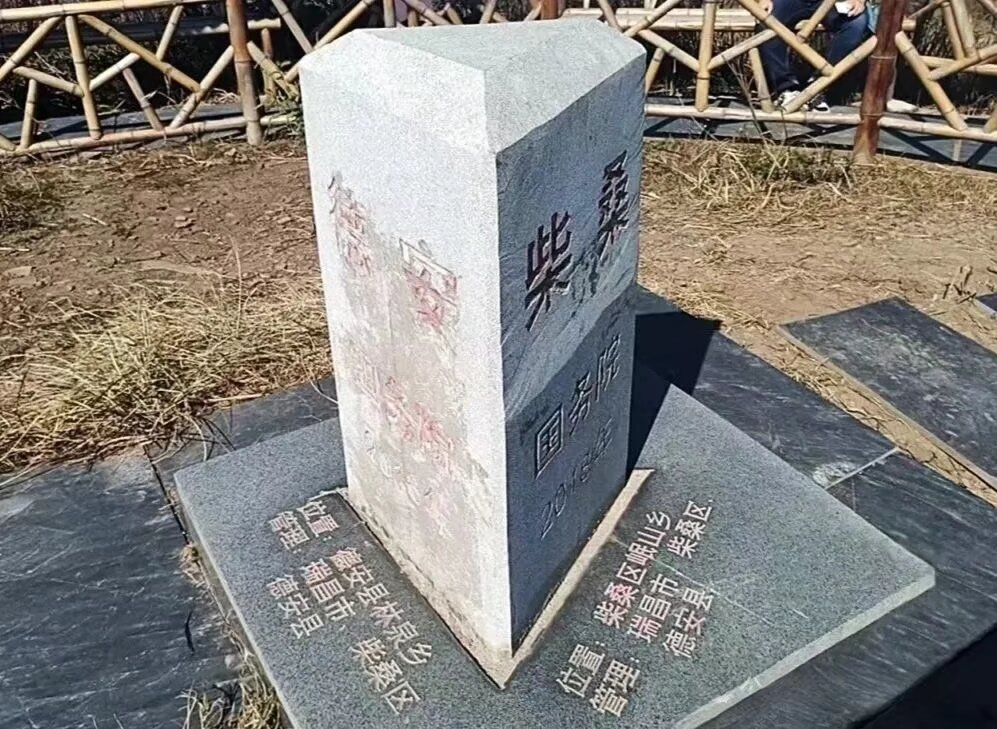

Journal · 2025-01-28
湖北省武汉市
甲辰龙年，我解锁了一些技能树上的新技能，也获得了一些有生之年的突破。
我实在不能说，自己是个多么牛逼的憨憨，但我打从心底里觉得，这个世界变得越来越有意思了。
这里头最大的原因还是，有一群活泼可爱的小伙伴，愿意纵容我这个憨憨，一点点靠着自己的胡思乱想、
柴江赣北 : 文案来自于工科生，图片来自于文科生

In the Jiachen Year of the Dragon, I unlocked some new skills on my skill tree, and also achieved some once-in-a-lifetime breakthroughs.
I really can't say that I'm some incredibly awesome goofball, but from the bottom of my heart I feel that this world is getting more and more interesting.
The biggest reason for all this is still that there's a group of lively and adorable friends who are willing to indulge this goofball, letting me bit by bit rely on my own wild thoughts,
柴江赣北 : The copy comes from an engineering student, the images from a liberal arts student.
En l'année du Dragon Jiachen, j'ai débloqué de nouvelles compétences dans mon arbre de compétences, et j'ai aussi réalisé quelques percées qui n'arrivent qu'une fois dans une vie.
Je ne peux vraiment pas dire que je suis un nigaud si génial, mais du fond du cœur je sens que ce monde devient de plus en plus intéressant.
La plus grande raison à tout cela reste qu'il y a un groupe d'amis vifs et adorables, prêts à tolérer ce nigaud, me laissant petit à petit m'appuyer sur mes propres idées farfelues,
柴江赣北 : Le texte vient d'un étudiant en ingénierie, les images d'un étudiant en lettres.
Im Jahr des Drachen Jiachen habe ich einige neue Fähigkeiten in meinem Fähigkeitenbaum freigeschaltet und auch einige Durchbrüche erzielt, die es nur einmal im Leben gibt.
Ich kann wirklich nicht behaupten, dass ich ein besonders krasser Tollpatsch bin, aber tief in meinem Herzen finde ich, dass diese Welt immer interessanter wird.
Der größte Grund dafür ist immer noch, dass es eine Gruppe lebhafter und liebenswerter Freunde gibt, die bereit sind, diesem Tollpatsch nachzugeben, und ich Stück für Stück auf meine eigenen wilden Gedanken zurückgreife,
柴江赣北 : Der Text stammt von einem Ingenieurstudenten, die Bilder von einem Geisteswissenschaftler.